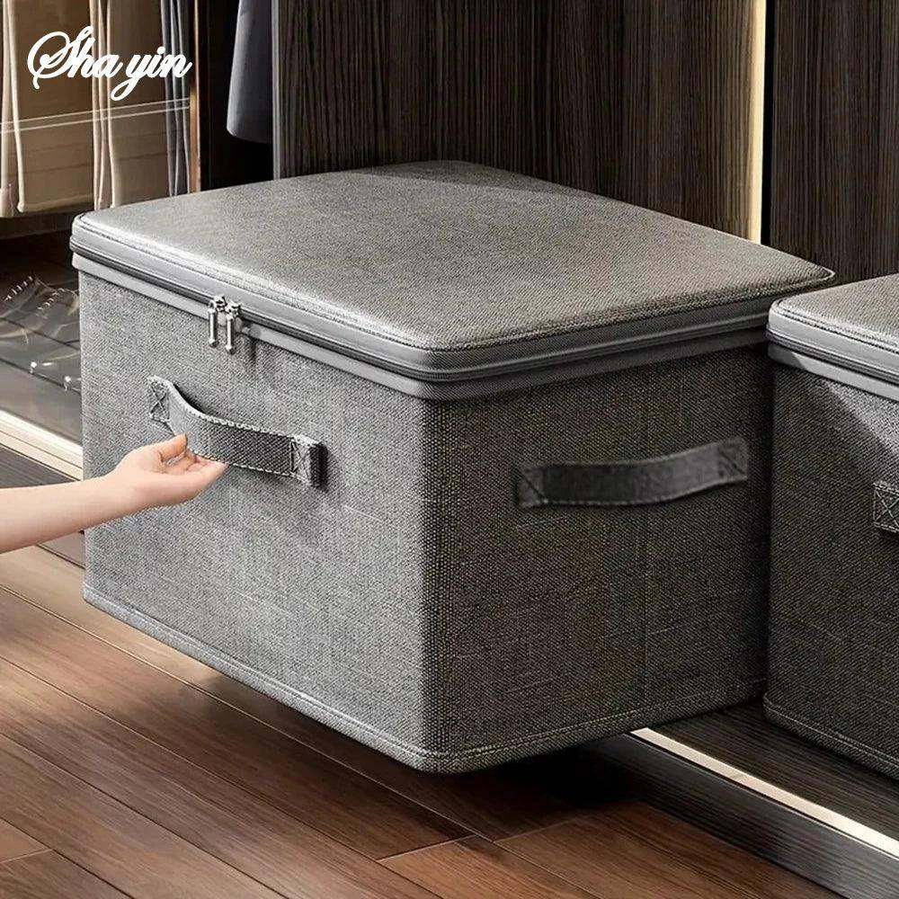
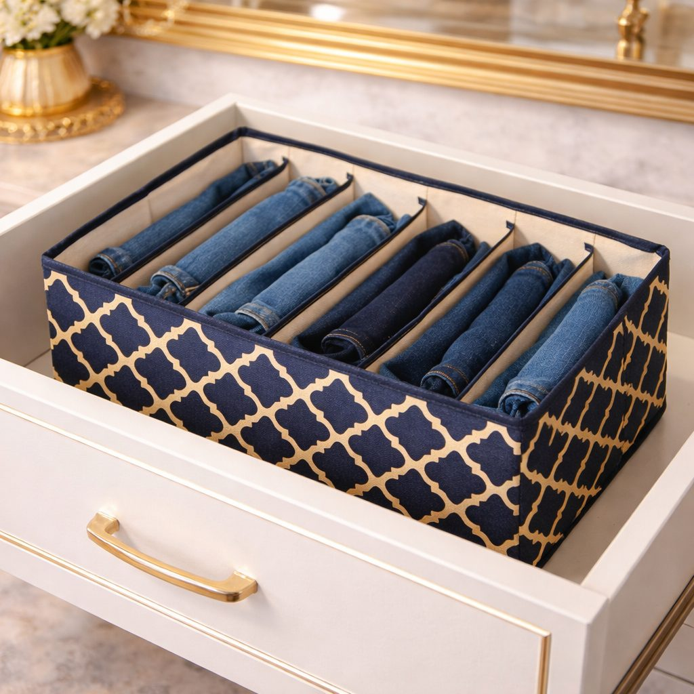

A step-by-step routine for switching your wardrobe between Pakistani summer and winter, with storage tips to protect clothes in the off-season.

Pakistani wardrobes work hard. Summer means lawn, cotton and light kurtas; winter brings khaddar, karandi, shawls, sweaters and heavy quilts. In most homes, closets are not big enough to hold both seasons comfortably, so twice a year, usually around October and March, families do the great wardrobe swap.
Done in a rush, the swap leaves clothes creased, misplaced or attacked by moths. Done with a plan, it takes an afternoon and makes the whole season easier.
Do not swap too early. In much of Pakistan, October days can still be warm while the nights cool. Start by moving only a few sweaters and shawls forward, and do the full swap once mornings are consistently chilly. In spring, do the reverse once the heat is clearly here to stay.
Take everything for the outgoing season out of the closet. Sort it into three piles:
Be honest. If you did not wear something all season, ask whether you will wear it next year.
Never store clothes that have been worn but not washed. Sweat and food stains that seem invisible now attract insects and set into the fabric over months. Wash or dry-clean everything first, and make sure it is completely dry. Even slight dampness leads to mildew in a closed box.
Label each box with its contents, such as "winter shawls" or "kids' sweaters." Next year you will thank yourself.
Bring out the incoming clothes and give them a shake and some fresh air; a few hours in the sun freshens winter clothes stored since spring. Hang everyday items at eye level. Put occasional wear higher up or at the back.
Vertical drawer dividers and slot organisers keep folded sweaters, socks and scarves in neat rows, so you can see everything without unfolding a whole pile. Rotating hangers can hold many dupattas or scarves in very little space.
Bedding takes the most room of all. Air quilts and blankets in the sun for a day before packing them away, then fold them loosely so the filling does not flatten permanently. Large zip storage bags or boxes keep dust out. In autumn, give them another sunny day before use; it removes the stored smell and makes them feel fresh on the first cold night.

Top shelves of the closet, under the bed, or the space above a wardrobe are the usual spots. Choose a dry place away from external walls that may get damp in monsoon. Avoid storing clothes in a garage or storeroom with no airflow.
Children can sort their own clothes with help, and it teaches them to look after their things. Older family members often have valuable formal wear that deserves extra care; plan the storage for those pieces together.
If your closet always feels full, the wardrobe and closet storage range at Trenducts.pk includes lockable zip boxes, drawer organisers and rotating hangers, with delivery across Pakistan.
A wardrobe swap is a chore, but it is also a chance to reset. With clean, labelled boxes and a tidy closet for the new season, getting dressed each morning becomes a little faster and a lot calmer.